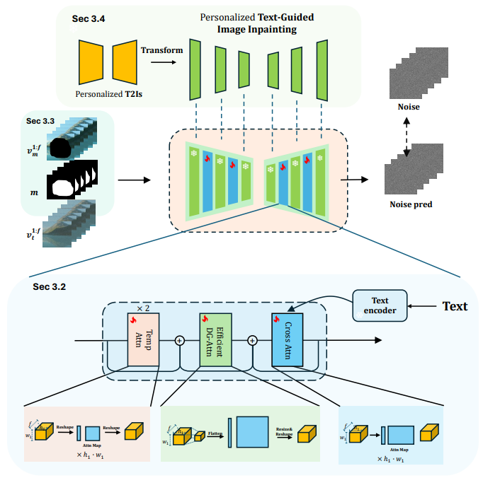
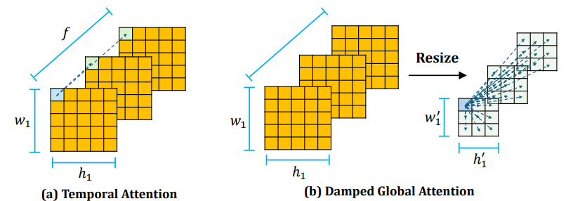
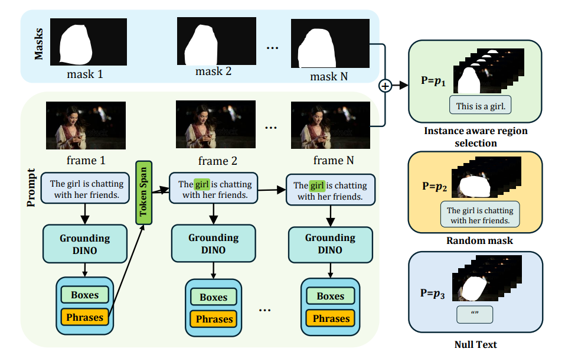
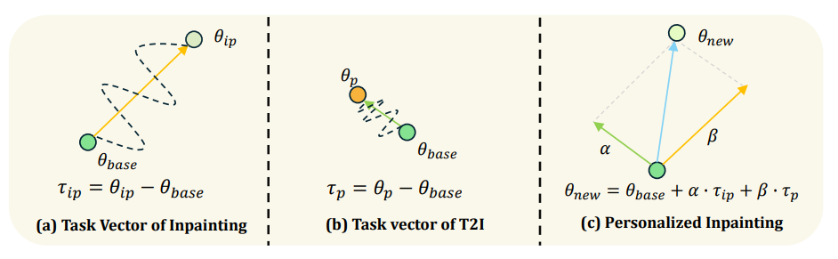

CoCoCo: Improving Text-Guided Video Inpainting for Better Consistency, Controllability and Compatibility
Bojia Zi1, Shihao Zhao2, Xianbiao Qi4, Jianan Wang4, Yukai Shi3, Qianyu Chen1, Bin Liang1, Kam-Fai Wong1, Lei Zhang4
1 The Chinese University of Hong Kong 2 The University of Hong Kong 3 Tsinghua University 4 International Digital Economy Academy
Abstract
Recent advancements in video generation have been remarkable, yet many existing methods struggle with issues of consistency and poor text-video alignment. Moreover, the field lacks effective techniques for text-guided video inpainting, a stark contrast to the well-explored domain of text-guided image inpainting. To this end, this paper proposes a novel text-guided video inpainting model that achieves better consistency, controllability and compatibility. Specifically, we introduce a simple but efficient motion capture module to preserve motion consistency, and design an instance-aware region selection instead of a random region selection to obtain better textual controllability, and utilize a novel strategy to inject some personalized models into our CoCoCo model and thus obtain better model compatibility. Extensive experiments show that our model can generate high-quality video clips. Meanwhile, our model shows better motion consistency, textual controllability and model compatibility.
Motion Capture Module
We propose a novel motion capture module. It consists of three types attention block, including two previously used temporal attention layers, a newly introduced damped global attention layer and a textual cross attention layer. The new motion capture module can enable the model to have better motion consistency and text-video controllability.
 Instance-Aware Region Selection
We design a new instance-aware region selection strategy instead of a random mask selection strategy used in previous method. The new strategy can help the model achieve better text-video controllability.
T2I Model for Video Inpainting
We introduce a novel strategy to transform some personalized generation models, and then plug them into our our text-guided video inpainting model. This strategy can enhance the compatibility of our model.
Citation
@article{zi2024cococo,
title={CoCoCo: Improving Text-Guided Video Inpainting for Better blue Consistency, Controllability and Compatibility},
author={Zi, Bojia and Zhao, Shihao and Qi, Xianbiao and Wang, Jianan and Shi, Yukai and Chen, Qianyu and Liang, Bin and Wong, Kam-Fai and Zhang, Lei},
journal={arXiv preprint arXiv:2403.12305},
year={2023}
}